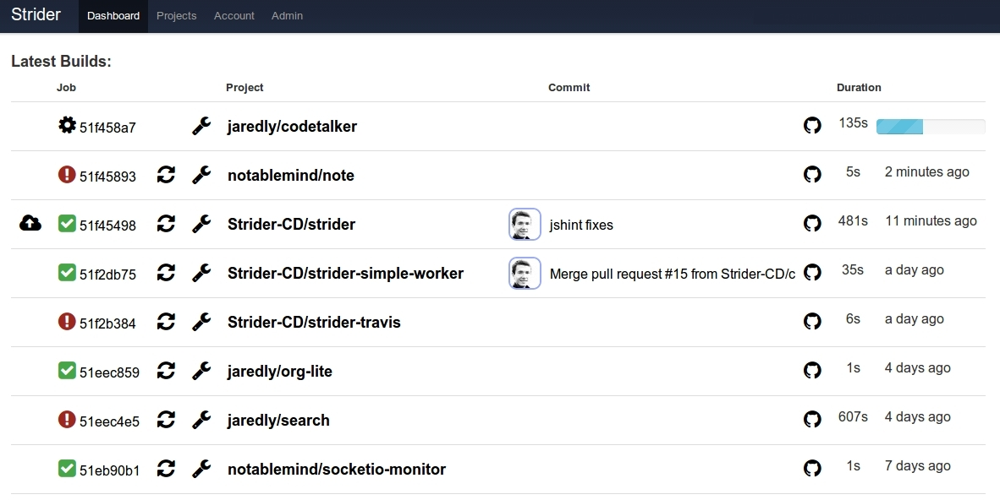

Brilliant Continuous Deployment
 more screenshots
Overview
Strider is an Open Source Continuous Deployment / Continuous Integration
platform. It is written in Node.JS / JavaScript and uses MongoDB as a backing
store. It is published under the BSD license.
Strider is extremely customizable through plugins. Plugins can
- add hooks to perform arbitrary actions during build.
- modify the database schema to add custom fields.
- register their own HTTP routes.
- subscribe to and emit socket events.
- create or modify user interfaces within Strider.
- so much more! just use your imagination!
README Contents
- General requirements
- Running on Infrastructure
- Advanced Topics
- API Documentation
- Resources
- Support & Help
- Changelog
General Requirements
Note: Installing on OS X might require XCode to be installed.
Running on Infrastructure
Make sure you have MongoDB installed on your system. You can get the latest version at mongodb.org.
Next you will need Node.JS. You can get binary packages for most platforms at nodejs.org.
Once you have Node.JS on your system, you can fetch & install all the dependencies for your Strider clone by executing the following command in the project root:
npm install
Note: Sometimes there are issues with permissions and installing global modules, in those cases run
npm config set prefix ~/npmto set your global modules directory to '~/npm'. You will also have to add~/npm/binto yourPATHenvironment variable.
Configuring
Strider configuration comes from environment variables. Most of the default
values should work fine for running on localhost, however for an
Internet-accessible deployment the following variables will need to be exported:
SERVER_NAME- Required; Address at which server will be accessible on the Internet. E.g.https://strider.example.com(note: no trailing slash, and included protocol)HOST- Host where strider listens, optional (defaults to 0.0.0.0).PORT- Port that strider runs on, optional (defaults to 3000).CONCURRENT_JOBS- How many jobs to run concurrently (defaults to 1). Concurrency only works across different project and branch combinations. So if two jobs come in for the same project and branch, concurrency will always be 1.STRIDER_CLONE_DEST- Where the repositories are cloned to (defaults to ~/.strider)DB_URI- MongoDB DB URI if not localhost (you can safely use MongoLab free plan - works great)HTTP_PROXY- Proxy support, optional (defaults to null)- If you want email notifications, configure an SMTP server (we recommend Mailgun for SMTP if you need a server - free account gives 200 emails / day):
SMTP_HOST- SMTP server hostname e.g. smtp.example.comSMTP_PORT- SMTP server port e.g. 587 (default)SMTP_SECURE- SMTP server TLS or SSL ("true" or "false")SMTP_USER- SMTP auth username e.g. "myuser"SMTP_PASS- SMTP auth password e.g. "supersecret"SMTP_FROM- Default FROM address e.g. "Strider noreply@stridercd.com" (default)
Additional Configurations
BODY_PARSER_LIMIT- Increase the maximum payload size that our body parser will attempt to parse. Useful for github web hooks.
You might need to follow these instructions if you use any of these, please do so before filing issues.
Adding Initial Admin User
Strider isn't much use without an account to login with. Once you create an administrative user, you can invite as many
other people as you like to your instance. There is a simple CLI subcommand to help you create the initial user:
node bin/strider addUser
Example run:
$ node bin/strider addUser
Enter email []: strider@example.com
Is admin? (y/n) [n]: y
Enter password []: *******
Email: strider@example.com
Password: ****
isAdmin: true
OK? (y/n) [y]:
22 Oct 21:21:01 - info: Connecting to MongoDB URL: mongodb://localhost/strider-foss
22 Oct 21:21:01 - info: User added successfully! Enjoy.
See the strider-cli for more details.
Starting Strider
Once Strider has been installed and configured, it can be started with:
NODE_ENV=production npm start
Strider on Heroku

To get up and running quickly on Heroku, you can simply use the button above. If you run into any issues, see the wiki entry.
Strider in Docker
Many users like to run Strider within a Docker container. Although this works well, supporting it is outside the scope of the Strider project.
We recommend using docker-strider as a base image when designing your Docker-based Strider installation. Please post related issues in the issues section for that repository.
Resources
- Strider Tutorial Series - Extensive guides about Strider covering platform setup, 3rd party integrations (GitHub, GitLab, etc), continuous deployments (Heroku, SSH), notifications (email, Slack, HipChat), how to create your own Strider plugin and many more.
- Strider on DigitalOcean - Covers setting up an Ubuntu machine with Strider using upstart.
- Strider plugin template - Simple setup for getting started with your own plugin.
- Panamax Strider template - Strider template for use with Panamax.
Advanced Topics
Advanced topics are located in the Wiki, here's a small subset of what's covered:
API Documentation
An effort has been started to document the existing REST API, and to have versioned documentation going forward. We use apiDoc for the documentation.
To build the documentation run npm run docs and the documentation will be accessable from apidocs/index.html.
Support & Help
We are very responsive to Github Issues - please think of them as a message board for the project!
IRC Channel
You can find us on irc.freenode.net in #strider.
If nobody is responding, don't leave immediately. Someone will eventually respond. If you don't want to wait please create a Github issue! Many Strider contributors don't use IRC at all, but will respond pretty quickly to new Github Issues.
For a view of what's going on with the project, check out our boards by setting up ZenBoard and visiting the "Boards" page.